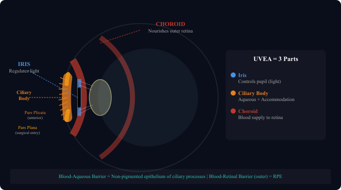

Iris, ciliary body (pars plicata & pars plana), choroid, and the blood-aqueous barrier

The uvea gets its name from the Latin word for grape ("uva"), a nod to its dark, grape-like look when removed from the eye. It is the middle, richly pigmented and vascular layer, made up of three continuous structures running from front to back: Iris, Ciliary Body, and Choroid.
The iris is a pigmented disc with a central opening called the pupil. By changing the pupil size, the iris controls how much light enters the eye.
Horner's Syndrome: Cut the sympathetic supply and the dilator pupillae loses its input. You get a small pupil (miosis), drooping of the upper lid (ptosis), and absent sweating on the same side (anhidrosis).
The choroid is the highly vascular layer between the retina and sclera. It is the richest blood supply in the body per unit weight.
ARMD: Drusen build up in Bruch's membrane, the RPE starts to fail, and photoreceptors lose their support. In wet ARMD, new abnormal vessels grow through Bruch's membrane into the subretinal space, leaking fluid and causing rapid central vision loss.
The ciliary body is divided into two zones:
| Zone | Location | Function | Surgical Relevance |
|---|---|---|---|
| Pars Plicata | Anterior (first ~2mm) | Contains 70–80 ciliary processes that produce aqueous humor. Contains ciliary muscle for accommodation. | ⚠️ Avoid — vascular, important structures |
| Pars Plana | Posterior (~4mm wide) | Relatively flat, no processes, minimal function | ✅ Safe surgical entry for vitrectomy, intravitreal injections, needle drainage |
The aqueous humor in the anterior chamber must remain clear. This is maintained by the Blood-Aqueous Barrier:
When uveitis strikes, those tight junctions break down and proteins and white cells pour into the anterior chamber. On slit-lamp you see the characteristic AC flare and cells, which are the defining signs of anterior uveitis.